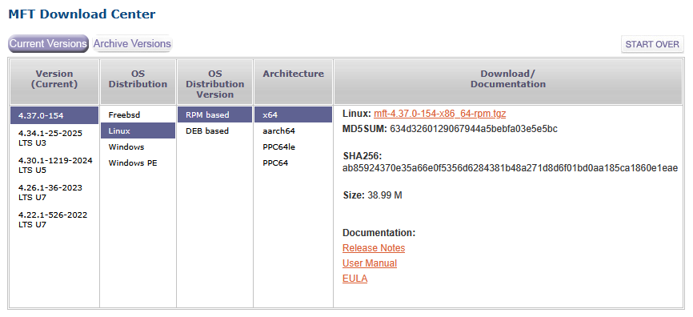

-
Install a RPM-based distro (e.g. RHEL)
-
Download the latest NVIDIA Firmware Tools
Example:

- Execute installer (install any required dependency)
$ sudo dnf install pciutils libibverbs kernel-devel
$ sudo ./install.sh
-I- Building the MFT kernel binary RPM...
-I- Installing the MFT RPMs...
Verifying... ################################# [100%]
Preparing... ################################# [100%]
Updating / installing...
1:kernel-mft-4.37.0-154.6.12.0_211.################################# [100%]
Verifying... ################################# [100%]
Preparing... ################################# [100%]
Updating / installing...
1:mft-4.37.0-154 ################################# [100%]
Verifying... ################################# [100%]
Preparing... ################################# [100%]
Updating / installing...
1:mft-autocomplete-4.37.0-154 ################################# [100%]
Verifying... ################################# [100%]
Preparing... ################################# [100%]
Updating / installing...
1:mft-mlx5-4.37.0-154 ################################# [100%]
Verifying... ################################# [100%]
Preparing... ################################# [100%]
Updating / installing...
1:mft-nvredfish-4.37.0-154 ################################# [100%]
-I- In order to start mst, please run "mst start".
-
Reboot
-
Start the service
$ sudo mst start
- Verify your devices are detected
$ sudo mst status
MST modules:
------------
MST PCI module is not loaded
MST PCI configuration module loaded
MST devices:
------------
/dev/mst/mt4117_pciconf0 - PCI configuration cycles access.
domain:bus:dev.fn=0000:02:01.0 addr.reg=88 data.reg=92 cr_bar.gw_offset=-1
Chip revision is: 00